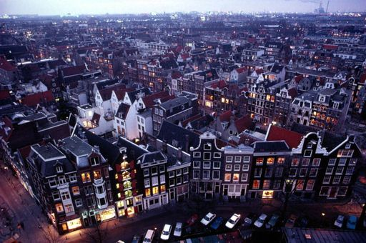

серпня 1291 року, коли три лісові кантони (землі): Урі, Швіц і Унтервальден,
відстоюючи незалежність від Габсбурґів, уклали заради оборони «вічний союз» (в рамках «Священної Римської імперії»).
серпня 1291 року, коли три лісові кантони (землі): Урі, Швіц і Унтервальден,
відстоюючи незалежність від Габсбурґів, уклали заради оборони «вічний союз» (в рамках «Священної Римської імперії»).сторінка для навчання веб-програмування
Князі́вство Мона́ко — мікродержава, напіванклав на півдні Франції на березі Лігурійського моря; площа − 2,02 км². Рельєф: горбистий. Країна розширює територію, засипаючи прибережні води. Голова держави — князь (князь Монако) Альбер II (з 2005, після смерті Реньє III); уряд очолює Жан Оссеїль з 1986 р.
Нідерла́нди — країна на заході Європи на березі Північного моря. Частина, офіційно Королі́вства Нідерла́ндів, котре складається з західноєвропейської території та Карибських островів Бонайре, Саба та Сінт-Естатіус, разом з островами Аруба, Кюрасао та Сінт-Мартен (які мають особливий статус).
Швейца́рія, також Швайца́рія, офіційна назва Швейца́рська Конфедера́ція — нейтральна федеративна республіка в Західній Європі.
Датою створення Швейцарської Конфедерації вважають 1 серпня 1291 року, коли три лісові кантони (землі): Урі, Швіц і Унтервальден,
відстоюючи незалежність від Габсбурґів, уклали заради оборони «вічний союз» (в рамках «Священної Римської імперії»).